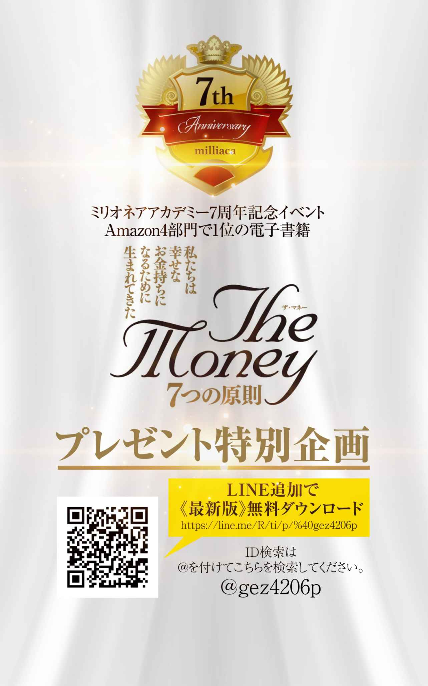
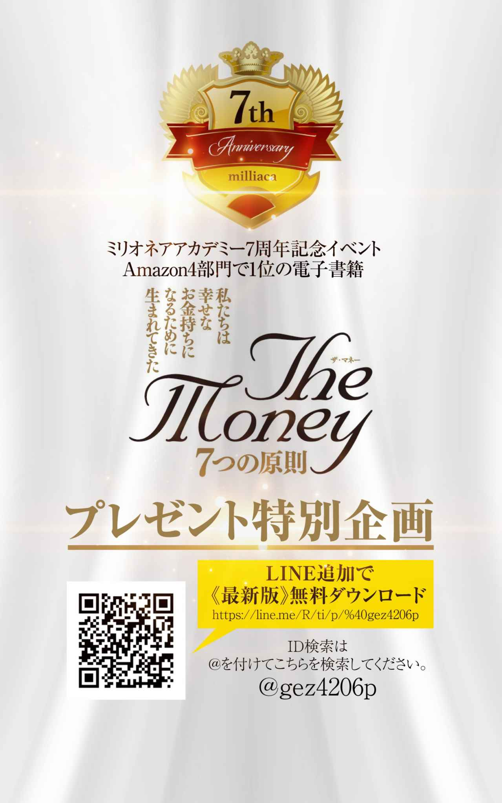
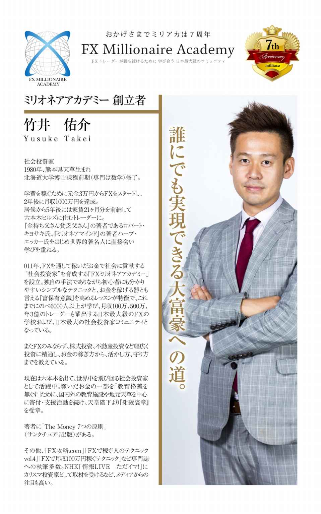

| ザ・マネー 7つの原則 第1章 お金の本質と 愛し方 | |
| 竹井 佑介 | |
| NEXT LEVEL (2018) | |

第１原則 お金の本質と愛し方
１ー９ 必要な時に必要なだけ、必要な場所にやってくるのがお金
はじめに
お金持ちと聞いてあなたはどのようなイメージを抱きますか？
ビル・ゲイツのような事業家、ウォーレン・バフェットのような投資家など、様々な方が頭に浮かぶことかと思います。ただ中にはお金持ちに対して悪いイメージを持っている方もいらっしゃるでしょう。
そもそもお金というものをほとんど理解しようともせず、ただイメージでお金持ちや稼ぐこと自体を毛嫌いしてしまっている金融リテラシーの低い方もいます。
私自身も幼少の頃、おじいちゃん、おばあちゃん子で一緒に水戸黄門を見て「越後屋、お主も悪よの〜」、「いえいえ若ほどでは」といったやりとりから、お金持ちとはどこか悪いことをしないとなれないものと思っていました。２０００年頃にはヒルズ族が生まれ、間もなくその凋落ぶりが報道されたため、お金持ちに対するイメージもさらに悪くなりました。
今、六本木ヒルズの中にはお金を稼いでもすぐに失う方もいれば、稼ぎ続けてしっかりと資産を構築する方もおられます。これまで国内外、また歴史上の人物含め色々なタイプのお金持ちを自分なりに分析してきました結果、「私たちはお金持ちにならなければならない」という結論に達しました。
お金は目に見える唯一のスピリチュアルと言ってもいいかもしれません。お金は、私たちの現在の状況や夢を叶えるために、足りないこと、必要なメッセージを伝えてくれています。
満月になればお月様に向かって財布を振り、新月になれば目標設定をして金運を上げようとする方もいます。しかし、具体的な行動の方法が分からない人もいます。そのため結果が出ないで、パワースポット巡りをするようになったりします。永遠に目標を未来に置き続ける生き方をしてしまう。スピリチュアルと現実との橋渡しを上手く出来ていない方がほとんどです。
異次元とも言うべき金融緩和と共にアベノミクスがスタートし日経平均株価は急騰。政府側からの投資呼び込みで、ＮＩＳＡもスタートする中、安易に投資の世界に首を突っ込み損失を出してしまっている人、また、今は利益が出ていても数か月に一度定期的にやってくる株価調整の急落、４年から５年に一度起きる大暴落のことなどを全く想定せずに、株やFXなどを持ちっぱなしにして、遅かれ早かれ大損してしまうであろう人があまりにも多いのです。
コツコツと長い期間を経て稼いできたお金を安易に巨額の住宅ローンとして組んでしまい、終身雇用は既に終わってしまっていることにも気づかず、「ゆとり返済」ならぬ「おとり返済」の罠にはまっている方も多いのです。
特に団塊の方々は、住宅ローンの残債が退職金では足りなくなり、活路としてNISAだったりするわけです。一見金融リテラシーが高そうなお医者様も、ふたを開けると、高い年収にも関わらず、いきなり黒字物件となるような一棟買いをしています。
結果、利益のほとんどを税金の支払いに充てることになり少しの空室にも耐えられないような不動産経営をしていることが多いのです。
これは先進国のお金に対する知識として極めて危機的な状況ではないでしょうか？
しっかりとお金というものについて、学んでおくことができれば、コツコツ貯金したお金を安易に住宅ローンや、一部の先物営業、海外投資などの投資詐欺に引っかかってしまうこともなくなるのではないでしょうか？
逆に、ロバート=キヨサキ氏の『金持ち父さん貧乏父さん』の中にある「ＥＳＢＩ」の考え方、つまり、Ｅ=従業員、Ｓ=自営業者、Ｂ=ビジネスオーナー、Ｉ=投資家のBIの考え方を身に着け、世界一の投資家ウォーレン=バフェットが言うように最大のレバレッジである時間を使い、アインシュタインが言うように人類最大の発明である複利を使って資産を構築することが出来るのではないでしょうか。
その構築した資産のキャッシュフローによって社会に役立つ投資、つまり社会投資をして世の中に貢献しつつ、しっかりと次世代へ資産と知恵を継承していくことが大切だと私は考えています。
私たちの人生はたったの８０年しかありません。
だからこそ祖先の方々が築いてこられた知恵、財産のバトンを受け継ぎ、世の中に貢献し、次世代にバトンタッチ、継承していかなければなりません。
その使命を持ったうえで共に手を取り合い、お金のレベルを上げ、しっかりと世界中で資産構築し、世の中のために投資をする社会投資家の仲間が、この本をきっかけに全国に広がることを祈っています。
竹井佑介
私たちがいつも何気なく使っているお金。多くの人がお金持ちになりたいと思っている一方で、お金は悪だと言う人もいます。お金が貯まれば貯まったで、強盗が来ないかと不安にもなる人もいます。お金がないが為に命を絶つ人もいます。
一体お金とは何なのでしょうか？
お金持ちは何か悪いことをやっているんじゃないか、お金のために働きたくはない、と言いつもやりたくもない仕事をやって一所懸命お金を稼いでいる方がいます。そういう人は稼ぎたいというアクセルを踏みつつ、稼ぎたくないというブレーキも同時に踏んでいます。アクセルを踏みながらブレーキを踏んでいたら当然ながらその車は壊れます。でもそんな風にお金をとらえている方がいかに多いことでしょう。
私たちはお金のことを理解し、心から愛することで稼ぐことへのブレーキを外すことが出来ます。そのためにも身近にあるこのお金について理解を深めていく必要があります。
お金の基本は「信用」です。
多くの人が自分の口座残高をベースに自分のお金の能力だと勘違いし、その残高の範囲内で様々な計画を立ててしまっています。レジャー、遊びのために使うお金であればそれで良いでしょう。しかしながら、多くの場合はそうではありません。
たとえば自宅を購入される際、全額現金で購入される方はどれほどいらっしゃるでしょうか？ほとんどは銀行からの借り入れを活用するかと思います。同様に不動産購入でも同じように銀行からの借り入れを活用する方がほとんどです。また株やFXなどのトレードでさえも証拠金という実際に自分が証券口座に振り込んだ金額の３倍から２５倍ものお金を運用することが出来ます。
また、事業を起こす際には例え自分の口座残高では足りなかったとしても周りの有志から出資を募って会社を興すことが出来ます。政策金融公庫などの創業支援融資などを活用して国からお金を借りて起業することも出来ますし、返還の義務がない助成金なども存在します。
より大きな金額が必要な時はベンチャーキャピタルを使って資金を集め上場を目指すことも出来ますし、もっと大きな額を集め事業を拡大させるために株式を上場させ、より一般の方々から投資、出資を募り次のビジネスをより大きく広大に仕掛けることも出来ます。
これらに共通することはあなたやそのチームの信用によって、あなたの口座残高以上のお金を集め活用することが出来るということです。
また、あなたに信用があれば提供するサービスや本なども売れることにもなります。ちなみに株式取引では自分が持っている以上のお金を使ったトレードのことを信用取引といいます。
以上のことからわかることはお金持ちになることは、世の中から信用を得ることと密接な関係があるということです。
愛という側面でお金を観てみましょう。時計や洋服、建物などの物質はこちらが「大好きだ」といくら伝えてみてもこちらに愛情を返してはくれません。
しかしながら人間や動物は愛情を注げば返してくれます。自分自身でも実験したのですが、切り花も「ありがとう」、「愛している」などの言葉を投げかけたり、ラベルに書いて貼ることでより長く生き、枯れるスピードも通常よりもずっと遅くなります。
人は特に顕著で幼少の頃から親や周りの人たちによって心から愛情を受けて育った人は愛に溢れ、恨んだり攻撃したりすることを知らず、感謝の気持ちをベースにどのように恩返ししようかと日々考え生きておられる方がほとんどです。
これはそのままお金の性質に当てはまります。人のようにお金は恨み攻撃するために使うと離れていき、逆にお金を愛し大事に使うことでより多くの仲間を伴って返ってきてくれます。ではどのようにしてお金を愛するのでしょうか？
それはお金に対して「感謝」を示すことです。
自分の元に来てくれたお金は発行されてから実に様々な人々の手に渡りながら巡り巡ってあなたのところに来てくれています。お金を受け取った人々おひとりおひとりに幸せを与え、人々を笑顔にしながら次はあなたに幸せを与えるためにやってきてくれています。
もしあなたの財布の中に昭和５５年のものがあれば、何と３０年以上も人々を喜ばせ続け、次に選ばれたのがあなたというわけです。この壮大なお金の流れを頭に描くだけでもお金に対する感謝の念が生まれ、顔が少しほころんできませんか？そしてこのやってきてくれたお金に対するお礼として、よりよいもの、世の中のためになることに使うことを心がけること。その行為がまさにお金を愛するということにつながり、そのような使われ方をしたお金は喜んで多くの仲間たちとともにあなたの元へとまた戻ってくることでしょう。
しかしながらどんなに愛情を示してもお金、口座残高が増えないということも実際に起こります。それは２つのパターンが考えられます。
１つ目は、残高が増えないことによって、もしくは減ることによってこれまでのやり方は間違っており、新しいやり方を模索しなさいというメッセージを与えてくれている場合。
２つ目は、自分のお金だけで行動しようとするのではなく多くの人の力を借りてやりなさいという一馬力から多馬力へと飛躍しなさいというメッセージを与えてくれている場合です。愛情表現の仕方が多岐に渡り、ただ単にこちらを喜ばせようとするのではなく、時に厳しく返してくることによって本当の道を探らせる深い愛情表現があるという意味で動物と物質の間の性質をお金は持っているのでないでしょうか。
このお金からのメッセージをしっかりと受け止めることが出来ないと、お金は何て悪いものなんだと安易に感じてしまいます。例えば口座残高が減るのをみて会社の給料が安いことを恨んだり、騙された相手を恨んだりしてしまいがちです。
しかしながら会社の給料が安いからこそ、会社の業績が不振なのではないかと考え必死に打開策を考え、会社内のチーム力をより強固にし、売上アップのために全力を尽くすことも出来ますし、客観的に観て不当な評価だった場合にはこれを機に転職することも出来ます。また騙された相手を恨む暇があったら自分の脇の甘さとお金を大事に扱えていなかったことを反省し、次回から大きなお金を動かすときには自分とは別の専門家たちの意見も聞きながらより慎重に行動することが出来るようになります。
こう考えると、そもそもお金自体に良い悪いといったことは無く、お金が増えたり減ったりした状況をどのように判断するのかが大切なのか分かります。変えられない過去に対していつまでも誰かを恨んだりグチグチ言ったりしてお金に執着すること自体が問題なのです。 それよりもその変えられない経験をどう将来に活かすのか、自分の弱点はどこなのかをしっかりと認識することが鍵になります。過去は変わりませんが過去に対する解釈はいかようにも変えられます。
思考は現実化するという有名な言葉がありますが、お金に良いイメージを持っている人は良い形でお金を稼ぎ、使っており、逆にお金に悪いイメージを持っている人は自分が納得しない形でお金を稼いでいたり、使っていたりしています。
ただ、大事なことをお伝えします。
実は、お金自体に良いも悪いもありません。使う方自身にそれは依ります。問題なのはお金に対して執着を持ってしまうことです。
人は執着心を持つと偏見をもってしまうことになります。これまで起こってきた経済危機の原因はお金に対する執着によって起きたものとも言えます。必要以上に自国の利益、自社の利益、自分の利益に執着することで、他を排斥し敵を作り、結果的に金融危機という大ダメージを受けこれまでの利益を一気に吹っ飛ばしてしまうことになります。自分のことだけではなく全体の利益になることを考え行動することがとても大切です。当たり前のことを当たり前にやれば当たり前に成功します。
この自然の流れを常に意識し、執着から離れ、お金に最も喜ばれるような自分も周りの人も皆喜ぶような使い方を日々追究することが大切なのです。
私たちは元々生まれてすぐにお金に対して執着していましたでしょうか？
生まれてすぐにオギャーオギャーと泣きながら、
「お金って良いものだよね」
「お金持っている人は何か悪いことをしているはずだ」
なんて思ってはいませんでしたよね。
人によっては１万円札をビリビリに破り親御さんに叱られた、なんて経験もあるかもしれません。つまり私たちが持っているお金の価値観は後天的につくられたもので、これまでの人生経験の中から形成されています。
親御さんからの教えや口癖の中から生まれた価値観、テレビなどのメディアの影響から生まれた価値観、過去の先人たちが書き残してくれた書物の中から得られた価値観、ビジネス、資金調達など自分自身の経験に基づいた経験によって得られた価値観もあるでしょう。
ただ、どのような価値観であれ、全てはあなたが生まれた後に出来たものであって、その価値観は先天的なものではないということです。
つまり、あなたはお金に対してどのような価値観でも持つことが出来るのです。言い方を変えれば夢を叶えるために必要な金の価値観は何かを考え、その価値観を意識して持って日々行動することで夢実現に大きな一歩を踏み出すことが出来るようになるということです。夢を叶えるためには「やり方」と同様に「あり方」のマインドセットも大切だからです。
今一度、お金の価値観はじめ、自分自身が持っている余計な価値観、つまりこだわりについて見直してみられても良いのではないでしょうか。
大事なのは自分の夢をかなえるために必要な価値観を持つことでそれはこちら側で自由に決めることが出来ます。その意味でお金自体には「良い」、「悪い」といったものはそもそもありません。次は具体的なお金の稼ぎ方についてみていきましょう。
お金の稼ぎ方には基本的に次の３つの種類があります。
①夢のお手伝いをして稼ぐ
②自分のビジネスで稼ぐ
③投資で稼ぐ
ひとつひとつみていきましょう。
①夢のお手伝いをして稼ぐ
こちらはサラリーパーソンの方も該当します。現在お勤めの企業を創業された方の夢をお手伝いしていることになるからです。
もちろんそれが自分自身の夢と合致して好きでやっているという方もいらっしゃいますので、創業者のお手伝いをしているという意識を持っておられない方も多いかと思います。もっと近い立場で創業期から関わっておられた方であれば創業者の夢をお手伝いし、応援しているという意識も強いでしょう。
②自分のビジネスで稼ぐ
起業しオーナー社長または個人事業主として稼いでいる状態です。
ほとんどの方が自分のビジネスを持つために大企業やベンチャーなどに入られてノウハウを学びつつ、資金の準備をして独立されます。ここで意識して欲しいのが会社に入って人の応援をしていたのが、今度は自分自身が応援される立場になっているということです。
自分がして欲しいことを先にする。実際、元々従業員の立場から起業された方のほとんどが、従業員時代に記録的な結果を残し、会社に多大なる貢献をされていた方です。まさに成功するためには与えることだということを示す良い例でないかと思います。
③投資で稼ぐ
投資とはお仕事やご自身のビジネスを通して創った資金を資産に変えていくという意味です。お金持ちの方々の多くは現金が出来たらこれを不動産など節税しながらキャッシュフローを生むような資産や不当に評価され価格が下落している株に変えようとします。
結果、景気が良くなると、不動産価格や株は上昇し、お金持ちの資金はより潤沢になります。特にアベノミクスのようにインフレターゲットを２％においているということは資産価格もそれ以上に上昇することとなり、逆に現金価値は２％ずつ下がっていきますので、現金を資産に変えようとします。
そして投資によって得た資金を元手に更に不動産などの資産を購入していくことで世の中の資産の価格が更に上昇していきます。
これが格差社会との主な要因です。不動産など資産を持っている人たちはインフレによってより資産価値は上昇していきます。しかし資産を持っておらず現金しか持っていない方々はインフレによってその預金価値は毎年２％ずつ減っていきます。結果的により格差は拡大するということです。
投資についてもうひとつ言及しておくと、リーマンショックなどの金融危機や東日本大震災といった大災害などで引き起こされる相場の大暴落時、皆がパニックになっている時こそが株や不動産など資産を購入する時期であることをおさえておいてください。
パニック時には冷静な判断を欠いてしまうことで、良いものも悪いものもまとめて値下がりする為、こういった時に優良銘柄や不動産購入などを進めると一時的には低迷しても後ほど大きな利益になることが多々あります。
その意味で相場暴落時に自宅、不動産、株など買うものリストなどをあらかじめ作成しながら普段から意識して生活していると、世の中の投資のリズムが見えるようになります。お金を稼ごうと思ったら世の中の上下の景気のリズムとそれに伴うお金の流れをみれば良いということです。
そして当然のことながら稼ぐと必ず発生するのが税金です。そのため投資で稼ぐときに大切なことは節税をしながら効果的に投資をして資産を構築していくことです。また後ほど詳しく説明していきます。
お金は大事なことを教えてくれます。
「稼ぎ方によって知恵が分かり、使い方によって人格が出る」
ということです。
お金を稼ぐためには、時代の流れを読み、その時最も重要なトレンドを読み、知識を身に付けることがとても大事です。その意味で稼ぐことが出来たということはその人がいかにお金、経済、時代の流れなど多岐に渡り学び、それを知恵として昇華し自分のものとし実際に行動できたかが分かります。そして、次のポイントは使い方です。
お金はエネルギーです。お金を持つということはその人の願望を叶える力がより増すことを意味します。そのためお酒が好きな方はよりお酒を飲むようになり、食べるのが好きな方はよりおいしいお店に通うようになり、学ぶことが好きな方はより本を読み、セミナーに行くようになり、旅行が好きな方はよりたくさんの国に旅行し、社会貢献に興味がある方はより寄付をするようになります。お金を持つと人生の自由度が拡大し好きなことをよりたくさんしようとするため、その行動がその人の性質、性格をより濃いものにさせるということです。
つまり、お金はその人が本来持っている性質を助長させる効果があるということです。その意味でお金を持つ前の段階から、自分の人生の指針を立て、どこに向かっていくのかをしっかりと意識しておかなければ、お金を持ったせいでとんでもない方向にも行ってしまうことにもなりかねません。その意味でお金とは諸刃の剣とも言えます。
全ては使う人次第です。使えば使うほど人生は良かれ悪かれ、その方向に向かうことになります。だからこそ方向性をしっかりと意識し、人格を磨き人間性を高めるようなお金の使い方をしなければなりません。お金自体に良い悪いはありません。要は使う人によって大きく左右されるということです。
包丁も料理人が持つのか犯罪者が持つのか、ピストルも警察官が持つのかマフィアが持つのか、同じものでも使う人によって大きく変わってくるということです。
お金と時間はどちらがより大切なのでしょうか？
時間を使うことでお金を作ることは出来ます。
お金を使うことで時間を作ることも出来ます。
それは人を雇うことによって、自分ひとりでは時間がかかることを、はるかに短い時間で行うことが出来ます。また自分ひとりの時間をどれほど使っても出来ないようなこと、例えばビルの建設なども、たくさんの人々の力を借りることで出来るようになります。
ただ、人に動いてもらうときに必ずしもお金が必要というわけではありません。かつてのギリシャ人がアッティカ地方のラウリオン銀鉱山でトラキア人を奴隷として強制的に使役していたように、オランダ人が３５０年間インドネシアを植民地支配したように、お金を使わずとも人を動かすことは出来ます。
それとは逆にイギリスの植民地からインドを独立させるために非暴力不服従運動を指導したマハトマ=ガンジーのように、南アフリカ共和国における白人と非白人の諸関係を規定する人種隔離政策の撤廃を成功まで導いたネルソン=マンデラのように徳とその信念に人が賛同し、お金を受け取ることなく人が動くことがあります。
そこには金銭的関係は無く、心からの賛同によってひとりひとりの限られた人生の時間を提供しています。つまりお金がなくても時間を得られることがあるということです。では逆に時間を使わなくてもお金は得られるのでしょうか？
これは不可能です。
お金を増やすためには必ず時間が必要です。お金は与える価値に応じて増加します。新たな価値が世の中に生まれれば、それに応じてお金は増えていくことにつながります。事実、世の中に流通しているお金の額は増え続けています。
しかし、永遠の寿命の時間をお金で買うことは出来ません。
その意味においてお金よりも時間の方が大事と言えるでしょう。
ただし、人を雇うことでひとりの寿命と比べれば永遠とも思える時間を買うことが出来るでしょう。
それでは次に命とお金についてみてみましょう。命とお金はどちらがより重いのでしょうか。
日本には「金は命の親、命の敵」ということわざがあります。お金のために命を救われることもあれば、お金のために命を落すこともあるという意味です。
例えばお金を使って食料を購入し命を維持し、暗殺者はお金によって人の命を奪います。
前者はお金によって命を長らえ、後者はお金によって命を失っています。
武者小路実篤の『人生論』には次のような一節があります。「しかし金というものは魔物であることはたしかだ。その奴隷にならないことが大事である。」
お金に支配されている方がこの世の中には多いのは紛れもない事実です。ギラギラ系と呼ばれるような方々は自分が如何にお金を持っているかを見せびらかし、見栄にお金を使い、その匂いを嗅いで集まって来たロクでもない仲間（連中）によって身を滅ばします。また借金苦で自殺してしまう方もいます。
この方々はまさにお金に翻弄されており、お金によって命を落とす方に至っては紛れもなくお金よりも命を軽くみている証拠です。
イギリスの哲学者フランシス=ベーコンが次のような言葉を残しています。
「お金は良い召使でもあるが、悪い主人でもある」
これはお金を扱う人によってお金は良くも悪くもなることを示す大切な教えです。
お金を良い召使とし決して命よりもお金が重くなるようなことにはならないようにしなければなりません。くれぐれもご注意ください。一旦お金が悪い主人となったとき、そのお金はあなたの命を奪う可能性がありますので。
大事なことはお金を稼ぐと一旦決めたら、徹底的に突き進むことです。何かを成し遂げようとするとそれに見合った自分をつくりあげるために様々な試練が待っています。時に嫌がらせや、友達、両親など事故や事件が起きるかもしれません。しかし、やると決めた以上は何事も徹底的にスピードを緩めることなく突き進むことです。
そして大事なことは、ひとりでどうにもならなくなったらチームを構築することです。
結局終わってみればその時は辛くて嫌に思えたことも、全てがベストタイミングで必要な経験を与えてくれていたんだということに気づくことが出来ます。これら一連の流れは夢を叶える時にも同じです。しかしながら多くの人たちは夢を目標半ばで諦め、行動を止めてしまいます。それはなぜかと言うと、
「お金をなぜ稼がなければならないのか」
その理由が極めて脆く弱いからです。試練が来た時にそれを乗り越えられるかどうか、そしてブレーキを踏まないようにするためには何が何でも稼がなければならない理由が必要です。しっかりとした理由さえあればどんなことがあってもあなたが行動をやめることは無いでしょう。
例えばあなたの子供がテロ組織に拉致されてしまい身代金として、この１年以内に１千万円ビジネスを構築して用意するよう要求された場合、あなたはどのような行動を取るでしょうか？少々ビジネスに失敗したからと言って簡単に諦めてしまうでしょうか？お金が嫌いだからと言って稼ぐのを止めてしまうでしょうか？
お金を稼ぐということに一転の曇りも無くなった時、あなたの本来の力が発揮されます。しかし普通に生活をしていて拉致されるといった極端なことはそうそう起こるものではありません。
では、億万長者になるような方々は、お金を稼くぐことに対してどのようにして一点の曇りも無い状態まで自分を持っていっているのでしょうか。
お金を稼がなければならない理由は人それぞれあるかと思います。多くの社長様は従業員の皆様を露頭に迷わせるわけにはいかないと言って、粉骨砕身頑張っておられます。自分の子供を環境の良い学校にいれてあげたいという気持ちで頑張って働いておられる親御様もいます。また面倒を見ている孤児院の子供たちの生活を支えるためにお金を稼ぎ支援しているという方もいます。
１００％あなた自身の誇りが持てるような使い方、そして絶対に稼がなければならい理由を持ったうえで行動することがとても大切です。しかも出来ればあなたが稼がなければ困る人がいるとそれはやめられない理由となることでしょう。なぜなら人は自分のためよりも自分の以外の人のために動く方がより大きな力を発揮するからです。
何事も「やる理由」と「やめられない理由」の２つが揃って初めて、一点の曇りも無いと言えるのではないでしょうか。
多くの人々が持つ夢のひとつに名声を残したいというものがあります。
「功成り名遂げて身退くは天の道なり」
という日本のことわざがありますが、成功して名声を得て、更にそこに安住して老害とならず道を後世にバトンタッチしていくという意味ですが、なんともアジアらしい考え方です。過去に大金持ちになった人はそれこそ星の数ほどいるでしょう。しかしその当時仮に世界一の大金持ちになったとしても、ただそれだけでは後世に名を残すことは出来ません。いくら稼いだかよりも、どうそのお金を使ったかの方がずっと大切です。お金持ちで後世に名を残した代表的な人物は鉄鋼王の名を持つアンドリュー・カーネギーではないでしょうか。
事業で成功を収めた後、ニューヨーク市へカーネギーホールを寄贈し、教育振興財団、国際平和基金、カーネギー工業大学など文化や教育の分野へ多くの寄付を行ったことから、亡くなられて１００年近く経つ今日でも慈善活動家としてよく知られています。
また、１８８９年執筆の『富の福音』は今なお、フィランソロピーを志す人々への啓蒙書となっています。フィランソロピーとは人類への愛にもとづき、人々の幸福、健康をはじめ人生の質の向上、改善を目的とした。利他的奉仕活動を指します。カーネギーの言葉で最も有名なものは、
The man who dies thus rich dies disgraced.
金持ちのままに死ぬのは不名誉なことだ。
でしょう。そういう哲学を持っていたからこそ、このようにたくさんの社会貢献をされ、結果名声を得られたのでしょう。名声はお金で買うことは出来ませんかが、適切な使い方をすることによって後世に名声を残すことが出来ます。
お金は必要な時に必要なだけ、必要な場所にやってきます。
それがまだ無いとしたら無いことがあなたにとってベストな状態であって、無いからこそ学べることを今あなたは学んでいるということです。お金が必要だからこそ、ちゃんと使ってくれるだろうと期待されたからこそ、あなたに預けられたお金です。更に突っ込んだものの見方をすれば、そのお金はあなたのものではないということです。
身体も親から与えられたものであり、お金も天から与えられたもの。
全てこの肉体を持った世界は借り物によって出来ているという意味において私たちは仮初 のバーチャルの世界を生きているのかもしれません。逆に言えばバーチャルであるが故にそこには制限が無く、自由に思い通りに夢を生きることが出来るとも考えられるのではないでしょうか。ただ、神様の視点と私たちの視点はしばしば異なります。描いた夢をかなえる方法が必ずしも口座残高が増えることではなく、減らすことによって内面が鍛えられ、考え方をより工夫し、仲間を作るようになるものです。そして試練を乗り越えた結果、その額を使いこなしてくれるだろうと期待され、実際にお金があなたの元に入ってくるようになります。
そのため自分がいくら持っている、稼いでいると自慢している人は大きな勘違いをしていることに他なりません。なぜならばそのお金はうまく活用してくれるからと期待され集まってきたものだからです。聖書にもあるようにお金をもって高ぶってしまうことを戒めなければなりません。そもそも、口座残高を自慢することがどれほど、神様からの期待を裏切っていることになるのか一度考えてみてください。
そのためにも自分に預けられたそのお金をどのように世の中に還元していくのかを考え、ビジョンを構築し世に発信することです。それによってあなたの現在の口座残高をずっと超えたお金や、人、モノの力が集まってきます。
入ってきたお金を富に変えていくためにはどのようにしたら良いのでしょうか？
その前に、そもそも富とは何を指すのでしょうか？
ウィキペディアでは次のように書かれています。
富 （英： Wealth ）は、価値ある資源または物的な財産が豊富にあること、またはそのような資産を支配することである。そのような財産または資源を豊富に持つ個人、コミュニティ、地域または国は、富んでいる（豊かである）とされる。富の概念はすべての経済学、特に開発経済学の領域で重要である。しかし、富の意味はコンテクストに依存し、明確な一般的合意は存在しない。（注コンテクスト=文脈）ここで大事なことは、一般的合意は存在しないということです。そのため、私なりの解釈で富について話をしていきます。富とは次の６つを指します。
①お金（キャッシュフロー）
②人脈
③経験
④直感力
⑤決断力
⑥判断力
です。ひとつずつ観ていきましょう。
①お金（キャッシュフロー）
こちらは口座残高にいくらあるかよりもキャッシュフローの方を指します。自分の時間を使わなくても入ってくる収入を指します。株の配当金、不動産賃貸収入などもこれに含まれます。まず目指すべきはあなたが月に使っている平均の支出を月のキャッシュフローが超えることです。
②人脈
お金を含む多くの問題はひとりの力でやってしまおうとすることに原因があります。
お金が足りないのであれば出資者が納得するビジョン、リターンなどを提案し投資家を集め、時間が足りないのであれば人の力を借りることですぐに問題は解決します。デール・カーネギーの『人を動かす』という本がありますが、あなたのビジョンのために動いて下さる人々の力をどれほど集められるかが、ひとつの富の基準となることが分かります。たくさんの方々のお力を借りるためには、素晴らしいビジョンとあなたの人格が求められます。
③経験
たくさんの経験を積んでいるということは次の３つの効果をあなたにもたらしてくれます。
１つ目は、ラポール（心が通じ合い、互いに信頼し、相手を受け入れている状態）の構築です。同じ経験をしたことがある方とはすぐにラポールを築くことが出来仲良くなれます。たくさんの経験があるということは、よりたくさんの方々と経験を共有出来るということであり、人のつながりがより早く構築されていきます。
２つ目は、メンタルの強化です。辛いこと、悲しいこと、出来ないと思っていたことなど弛 まぬ努力で乗り越えることが出来たら、それ以降の人生にとって、この経験以下のことは最早超えられない壁ではなくなっています。つまりその時はとても辛い経験だったとしても、未来には「アレにくらべればマシ」というひとつの基準となり、自分自身のメンタルのステージを上げることが出来ます。
３つ目は、問題解決能力の向上です。過去と同じような経験をしたことがある場合には、以前解決した方法もしくはその応用にて、迅速にその新たな問題を解決することが出来ます。世界中で大人気のゲーム、ドラゴンクエストではレベルを上げるために経験値を溜めなければなりませんが、まさに言い得て妙です。
④直感力
初めて出会った時のファーストインプレッション（最初の印象）、新しい話を持ちかけられた時の最初の感情の動きなどを私はとても大事にしています。なぜなら論理的に考えたことは自分自身のレベルを超えることはありませんが、直感は神様のレベルだと感じているからです。直感の中には経験に裏付けられて出てきているものもありますが、全く理由もなく浮かぶ直感というものも確かにあります。初めてお会いした人に対して「何か苦手だな」、「何か素敵だな」と言葉が頭に浮かぶ、その少し前に実は心、感情は動いています。
それは、ワクワクであったり、グッと胸を差し込まれるような感じがしたり、キュンと胸が高鳴ったり、ゾッと身震いしたり、身体がスっと軽くなったり、腹の下（丹田あたり）が重たくなったり、多種多様な反応があるかと思います。
しかし、このわずかな感情の動きを意識している方はほとんどおられないように思います。この最初の直感は不思議と後々当たっていることがほとんどでした。そのため今では自分に言い聞かせている言葉があります。
「論理は自分のレベル」
「直感は神様のレベル」
最近では専ら直感に従い行動し、後々その直感がなぜ起こったのかを結果を通して紐解いていくようにしています。
⑤決断力
直感とつながりが深いのがこの決断力です。たくさんの似たような過去の経験を通して導かれる決断や、一瞬のひらめきでの決断など成功していく方というのは往々にして決断から行動までのステップが早い傾向にあります。決断力は筋肉のようなもので使えば使うほど、より鍛えられていきます。
⑥判断力
この決断力と判断力の関係は２種類の白い筋肉と赤い筋肉との関係に似ています。
白い筋肉は速筋と言われ瞬発力に優れた運動をするのに向いている筋肉で、赤い筋肉の遅筋は持久力に優れた運動をするのに向いている筋肉です。前者に当たるのが決断力だとすれば、後者に相当するのは判断力となります。よりじっくりと時間をかけ過去の経験と照らし合わせて、判断していくことでより自信を持って選んだ道に突き進むことが出来ます。
これら６つを意識して活用していくことで、富を構築するスピードはより早められることでしょう。
キャッシュフローを更に構築するために不動産を購入することは一番わかりやすい富の拡大の例になります。しかし前述の通り富の大部分を占めているのは知恵です。どんな状況であっても仮に破産したとしても、どんな状況からでも財を成すことが出来る力こそまさに富です。
１ー１０で示した６つの力が備わり、月々のキャッシュフローが支出の何倍、何十倍、何百倍にもなったとしても常に、スキルアップを図り経験値を積み重ねることが大事です。特に私自身はガーッと集中して働いて、一気に休みを取り、次の挑戦について考えたりする時間を作るようにしています。実際２００６年末まで一所懸命働いてビジネスの形を作り２００７年は比較的のんびりしつつも様々な分野の本を読んだり海外のセミナーに出たりして見聞と人脈を広げるようにしていました。最近でしたら２０１４年９月１０日にはオンラインスクールのシステムを構築し、不動産を２件購入し、ツアーで伊勢修養団の研修に行き、京都で勉強会を開催し、美容室 Real Me ６店舗目である福岡大名１丁目店を出店し、香港、マカオで仕事をし、１０月にはロシア視察をし投資計画を立て準備し、アメリカ投資ビジネスの打ち合わせをし、沖縄で勉強合宿をしていました。このまま怒涛のように働き続けると心身ともに疲弊してしまうので、こういった後には必ずお祝いや休息の場を設けます。１０月２０日の午後から２３日までは沖縄の小浜島や竹富島の星野リゾートに仲間たちと集合してのんびりして過ごす時間を作りました。
また、全国セミナー、フィリピン語学留学、投資視察、引越し、大規模な望年会の企画、ハワイ勉強合宿をし、その後はホノルルの西側の Ko Olina 地区のマリオットのタイムシェアを使って２０１５年の計画を立てていきました。
そして、２０１５年は日本、フィリピンを中心にビジネス構築や執筆をし、不動産によりキャッシュフローを更に大きく構築して、２０１６年からまた見聞を広げるために世界一周の旅に出たいと考えています。
このようにして自分自身の富のレベルを２つの方法で上げていきます。
１つ目は集中して仕事をすることでスキルアップをします。２つ目は集中して時間を作って遊んだり、次の行動計画を立てたり、これまで忙しい時には見向きもしなかった分野について勉強したり経験を重ねます。
そうすることで見聞を広めながら富のレベルを上げることが出来ます。
第１原則でお金を今いくら持っているかというよりも、どれだけの信頼、信用をこれまで人生で得られて来たのかの方が大事だという話をしてきました。そしてその信頼がしっかりとおありの方は力を貸してくださる方も大勢いらっしゃり、自分ひとりでは到底なし得ないようなことも実現出来るようになることもお話しました。では、信頼の最高の形とは一体何なのでしょうか。そして、どのレベルの信頼に向かって私たちは人間関係を構築していけば良いのでしょうか。
それは「愛」です。
愛とは、自分がしてほしいように相手に接することであり、自分以上に相手のことを大事にすることであり、一緒にいるだけでやすらぎ、やる気、パワーを頂けるものです。
して欲しいことが先にくるのではなく相手の立場にたって自分がその相手の為に出来ることを考え、スキルが足りなければ努力し、人を紹介し、少しでもお役に立てるよう一所懸命に行動することです。
そういった愛の信頼関係を互いに結尾合っていくことが出来れば、自分ひとりの力をはるかに超えた本当に素晴らしい人生となることでしょう。
 